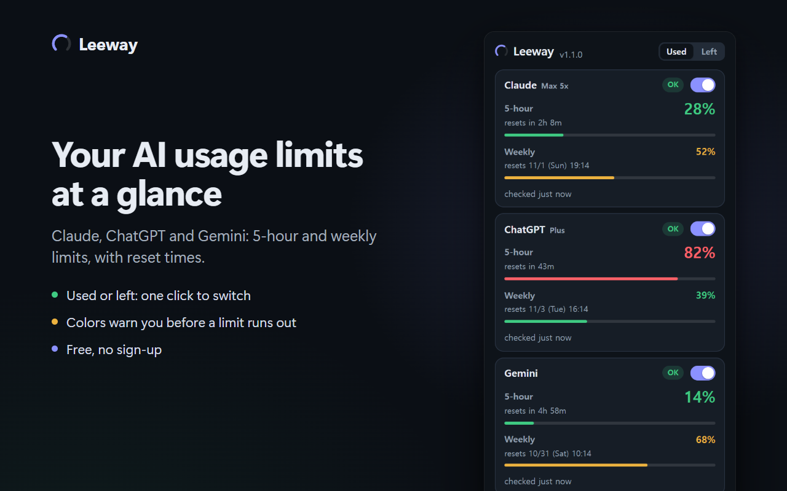

Leeway는 AI 사용량 한도(5시간·주간)를 얼마나 썼는지, 또는 얼마나 남았는지 팝업, 툴바 배지, 항상 위에 뜨는 오버레이로 보여주는 무료 오픈소스 Chrome 확장 프로그램입니다.

?로 표시합니다.| 서비스 | Leeway가 읽는 것 |
|---|---|
| Claude | claude.ai 사용량 화면이 쓰는 사용량 엔드포인트의 5시간·주간 한도. 탭을 열어 둘 필요가 없습니다. |
| ChatGPT | 설정 > 사용량 화면의 값: Codex, Work, 워크스페이스 에이전트, ChatGPT for Excel이 함께 쓰는 요금제 한도(계정에 따라 5시간, 주간, 30일). 일반 채팅 대화는 그 화면에서 집계되지 않습니다. 탭을 열어 둘 필요가 없습니다. |
| Gemini | 열려 있는 gemini.google.com/usage 탭의 현재 사용량·주간 카드. Gemini에는 사용량 API가 없어 그 페이지가 열려 있어야 합니다. 팝업의 Gemini 사용량 버튼을 누르면 그 페이지를 열거나 이미 열린 탭으로 이동하고, 로드된 뒤 자동으로 읽습니다. Leeway는 그 탭이 메모리에서 내려가지 않게 하고, 뒤에 있는 탭의 숫자가 5분보다 오래됐거나 Chrome이 탭을 재웠으면 그 탭을 새로고침합니다. 보고 있는 탭은 건드리지 않습니다. |
공개된 안정 API가 아니어서 예고 없이 바뀔 수 있습니다.
자세한 내용: 개인정보처리방침(영문)
여러 계정을 보려면 계정마다 Chrome 프로필을 따로 만들어 로그인하고, 각 프로필에 Leeway를 추가하세요. Windows에서는 선택 기능인 Leeway helper로 각 프로필의 팝업과 오버레이가 다른 프로필의 사용량도 함께 보여줍니다. 실험 기능이고 기본은 꺼져 있으며, 팝업에 보이는 숫자만 내 컴퓨터의 파일을 통해 주고받습니다.
Chrome 웹 스토어에서 Leeway를 설치하고 팝업에서 Claude를 켜세요. Chrome에서 claude.ai에 로그인되어 있으면 팝업에 5시간·주간 한도를 사용한 비율과 초기화 시각이 나오고, 툴바 배지에는 한도에 가장 가까운 서비스의 값이 표시됩니다. 남은 비율로 보려면 팝업 위쪽에서 남음을 고르세요.
네. 팝업 위쪽의 사용 | 남음 전환으로 팝업, 오버레이, 툴바 배지의 모든 숫자를 남은 비율로 바꾸거나 되돌릴 수 있고, 고른 것은 기억합니다. 기본은 사용입니다. 색은 어느 쪽이든 남은 양을 따르므로 85% 사용이면 빨강입니다.
네. ChatGPT는 설정 > 사용량 화면에 나오는 값, 즉 Codex, Work, 워크스페이스 에이전트, ChatGPT for Excel이 함께 쓰는 요금제 한도를 보여줍니다. 일반 채팅 대화는 그 화면에서 집계되지 않습니다. Gemini는 열려 있는 gemini.google.com/usage 탭의 숫자를 읽으므로 그 페이지가 열려 있어야 합니다. 팝업의 Gemini 사용량 버튼을 누르면 그 페이지를 열거나 이미 열린 탭으로 이동하고, 로드된 뒤 자동으로 읽습니다. Leeway는 그 탭이 메모리에서 내려가지 않게 하고, 뒤에 있는 탭의 숫자가 5분보다 오래됐거나 Chrome이 탭을 재웠으면 그 탭을 새로고침합니다. 보고 있는 탭은 건드리지 않습니다.
아니요. Leeway는 Chrome에 이미 로그인된 세션을 그대로 씁니다. 비밀번호, 쿠키, API 키를 요구하지 않고, 세션 토큰은 저장·기록·전송하지 않습니다.
아니요. 사용량 한도만 읽습니다. 페이지 스크립트는 각 서비스의 사용량 화면에서만 실행되고 대화 페이지에서는 실행되지 않습니다.
네. 팝업의 오버레이 열기를 누르면 작은 Leeway 창이 열리고, 그 창의 항상 위에 띄우기 버튼을 누르거나 바로 Enter를 누르면 Chrome의 Document Picture-in-Picture로 항상 위에 뜨는 작은 창이 열립니다(Chrome 116 이상). 클릭하면 한 줄로 접힙니다.
claude.ai 로그인 하나가 개인 요금제와 Team 워크스페이스처럼 여러 조직에 속해 있으면 조직별로 따로 보여줍니다. 다른 계정은 계정마다 Chrome 프로필을 따로 두고 로그인하세요. Windows에서는 선택 기능인 Leeway helper(실험 기능)로 각 프로필이 다른 프로필의 사용량도 함께 보여줍니다.
Leeway는 MIT 라이선스의 무료 오픈소스입니다. Anthropic, OpenAI, Google과 관계없는 독립 프로젝트입니다.